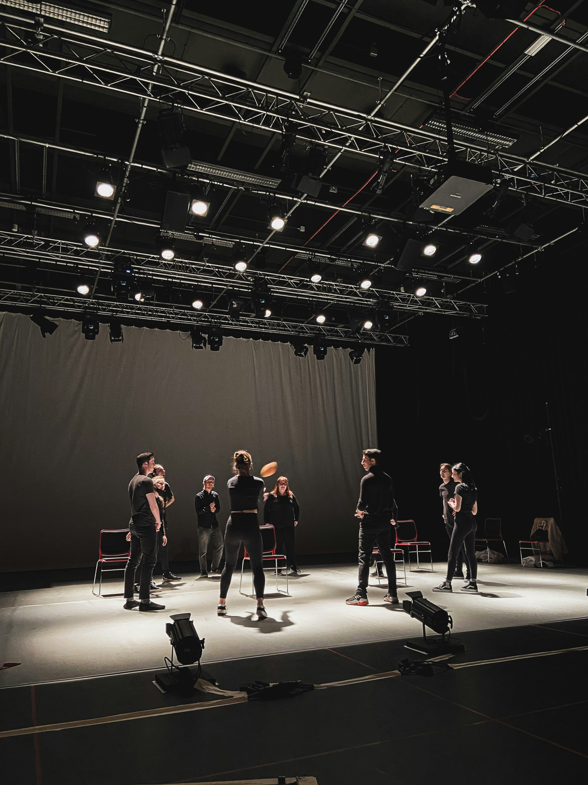

Stage
Acting, expression and stage presence.
Stage Skills
Stage skills help performers feel confident in front of an audience. They include acting, facial expression, movement awareness and communication.
In Art in Motion, stage preparation also includes working with emotions, character, performance energy and stage make-up.
